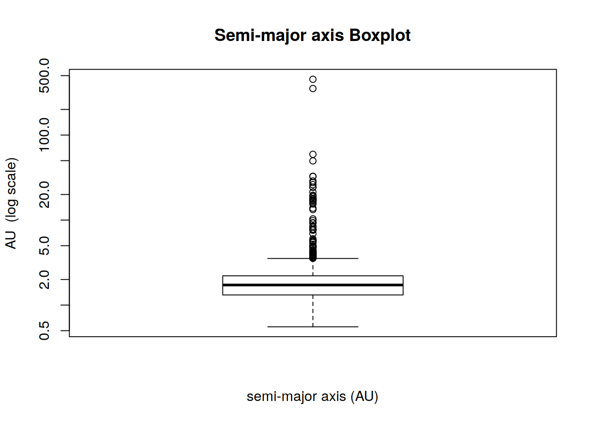

Final Project
Daniel Justice
3/20/2020
Solar system small body analysis
The data presented here is a sample collected from NASA’s JPL Small-Body Database. They represent smaller objects in the Solar System such as comets, asteroids, and moons. I chose this data set because I am curious about space science, and this is an opportunity to learn more about the subject while fulfilling the requirements of the assignment. Please forgive any inaccurate statements about orbital mechanics! There are 22,458 cases in my sample.
Variables
| Title | Description | Type |
|---|---|---|
| full_name | Full Name | string |
| a | [au] semi-major axis | float64 |
| e | eccentricity | float64 |
| i | [deg] inclination | float64 |
| w | [deg] perihelion degree | float64 |
| om | [deg] node degree (longitude of the ascending node) | float64 |
| ma | [deg] M mean anomaly degree | float64 |
| q | [au] perihelion distance | float64 |
| ad | [au] Q aphelion distance | float64 |
| per_y | period years | float64 |
| H | absolute magnitude | float64 |
| moid | [au] Earth MOID (minimum orbit intersection distance) | float64 |
| orbit_id | Orbit solution ID | string |
| class | Orbit class | string |
All of the float64 data types are quantitative variables, and the string data types orbit_id and class are categorical.
Orbit Classes
Below is a table of orbit classes. There is a wealth of information on the CNEOS website that provides much more detail than I can here.
| class | name | num |
|---|---|---|
| AMO | Amor | 8267 |
| APO | Apollo | 12308 |
| ATE | Aten | 1684 |
| ETc | Encke-type Comet | 1 |
| HTC | Halley-type Comet | 30 |
| IEO | Atira | 21 |
| JFC | Jupiter-family Comet* | 10 |
| JFc | Jupiter-family Comet | 137 |
JFC -> Jupiter-family comet, classical definition (P < 20 y).
JFc -> Jupiter-family comet, as defined by Levison and Duncan (2 < TJupiter < 3).
Eccentricity
The first quantitative variable I would like to explore is labeled e for eccentricity. This variable takes on values between 0 and 1 where 0 is a perfectly circular orbit and close to 1 flattens the orbit into line. The distribution appears to be close to normal and slightly skewed to the right.
The mean is 0.447.
The median is 0.46.
The IQR is 0.257.
The standard deviation \(s\) is 3.943.
There are 0 outlier values less than -0.069
There are 35 outlier values greater than 0.957
Five-number summary
| Variable | Value |
|---|---|
| minimum | 0.003 |
| \(Q_1\) | 0.316 |
| median | 0.46 |
| \(Q_3\) | 0.572 |
| maximum | 0.998 |
Eccentricity by orbit class
Near-Earth objects (NEO) have orbits that put them in proximity to Earth’s orbit. It is not much surprise to see similar IQR’s in these classes (AMO, APO, ATE, and IEO). The Atiras class (IEO) is noteworthy for its lack of extreme values. NEO’s in this class have orbits contained entirely within Earth’s own orbit.

Semi-major axis
The other quantitative variable I would like to explore is the semi-major axis. This is the larger of the two axis of an ellipse (for e > 0). This distribution has a log-normal shape and is skewed to the right with a much longer tail than the previous graph. Given the spread of this data, please note the logarithmic scale where indicated.
The mean is 0.447.
The median is 0.46.
The IQR is 0.892.
The standard deviation \(s\) is 3.943.
There are 0 outlier values less than -0.022
There are 98 outlier values greater than 3.546

Five-number summary
| Variable | Value |
|---|---|
| minimum | 0.555 |
| \(Q_1\) | 1.316 |
| median | 1.723 |
| \(Q_3\) | 2.208 |
| maximum | 453.022 |
Semi-major axis by orbit class
Aten (ATE) and Atira (IEO) class bodies have semi-major axes smaller than 1 AU by definition. I am surprised that there are no outliers in the Jupiter and Haley-family classes. This may be due to observational practices or other constraints that I am not familiar with.
For reference, Earth is 1 AU from the sun, and Pluto is around 40 AU from the sun. Some of these bodies travel very far outside of our planetary system!
Linear correlation
The correlation coefficient \(r\) is 0.145. One possible confounding, or lurking variable is i or inclination. Inclination exhibits a similar correlation coefficient and clustering of values. The r-value is low, but it appears from the clustering in the above graph that one would have a decent probability of finding satellites near the regression line, especially for larger values of eccentricity. I am surprised that orbits with large semi-major axes tend to be highly elliptic as well.
Summary
I do not have the physics background and experience to do this data justice. There are many more variables and relationships that could be explored much further. I am finishing this assignment with many more questions than answers about this data set, but it was an exciting opporunity to explore a new subject! NASA’s JPL provides a wealth of data to the public for those who are interested. I highly recommend you take a look at these awesome resources!